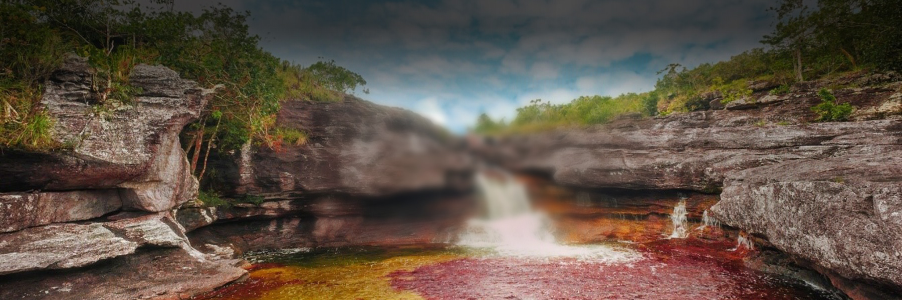

|  |
Tenemos: termales San Vicente (ecologico) y termales Arbeláez (balneario)
- Caminata ecológica a los Chorros de don Lolo
- (hotel) Finca del cafe
- Parque del Machete (Café restaurante)
- Parque principal Las Araucarias
- El tambo (café mirador)
- Biblioteca municipal
Lagos de Venecia |